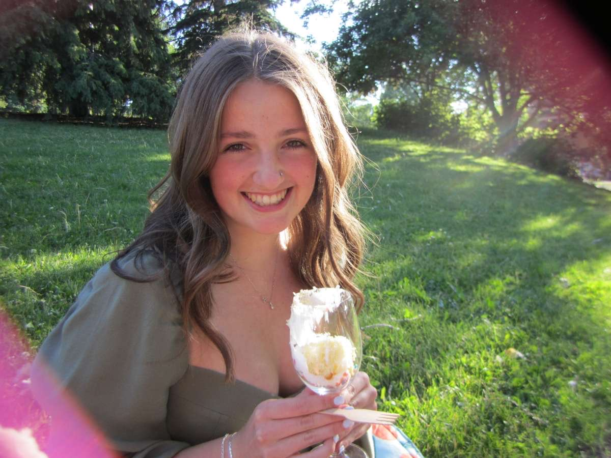

About Me

Hi! I'm Ava
I am a kinesiology student who loves understanding how people move, learn, and perform. I’m especially drawn to exercise physiology and technology, whether that’s analyzing data, building small tools, or exploring how digital platforms can support healthier, more active lives.
I am someone who learns by doing, so this website is my space to experiment, create, and share what I’m working on. You’ll find a mix of academic projects, experiments, and overall creative elements to reflect who I am and what I am interested in.
As I continue through my degree, I’m excited to continue blending science, creativity, and technology, and to build skills that help me contribute to the future of movement and human performance.
My interests and why I chose Kinesiology
I am a former national-level gymnast, with a specialty in trampoline. Through this sport experience, I have developed a significant interest in the human body, especially in areas related to physical performance, injury prevention, and rehabilitation. For me, this extends to a greater understanding of the mechanisms of joint injuries, the effectiveness of prevention and rehabilitation protocols, and their impact on the activities of daily life. I find myself very interested in the advancements in technology, and the innovative methods that medical professionals use to help patients manage and recover from injuries. The development and integration of new technologies in medical practice, such as wearable devices and advanced imaging techniques, demonstrates exciting potential for improving patient outcomes and enhancing the quality of care that is able to be provided.
I am also a creative and hands-on individual who enjoys projects that allow me to think critically and solve problems. In my free time, I love participating in hobbies such as crocheting, knitting, and sewing, as they allow me to express my creativity and embrace challenges with practical solutions. These activities have taught me the satisfaction of seeing a project through from start to finish.